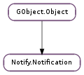

| static | new(summary, body, icon) |
| add_action(action, label, callback, *user_data) | |
| clear_actions() | |
| clear_hints() | |
| close() | |
| get_closed_reason() | |
| set_app_name(app_name) | |
| set_category(category) | |
| set_hint(key, value) | |
| set_hint_byte(key, value) | |
| set_hint_byte_array(key, value, len) | |
| set_hint_double(key, value) | |
| set_hint_int32(key, value) | |
| set_hint_string(key, value) | |
| set_hint_uint32(key, value) | |
| set_icon_from_pixbuf(icon) | |
| set_image_from_pixbuf(pixbuf) | |
| set_timeout(timeout) | |
| set_urgency(urgency) | |
| show() | |
| update(summary, body, icon) |
| Name | Type | Flags | Description |
|---|---|---|---|
| app-name | str | r/w | The application name to use for this notification |
| body | str | r/w | The message body text |
| closed-reason | int | r | The reason code for why the notification was closed |
| icon-name | str | r/w | The icon filename or icon theme-compliant name |
| id | int | r/w | The notification ID |
| summary | str | r/w | The summary text |
| Name | Parameters | Return | Description |
|---|---|---|---|
| closed | Emitted when the notification is closed. |
| Name | Type | Access |
|---|---|---|
| parent_object | GObject.Object | r |
Bases: GObject.Object
| Parameters: | |
|---|---|
| Returns: | The new Notify.Notification. |
| Return type: |
Creates a new Notify.Notification. The summary text is required, but all other parameters are optional.
| Parameters: |
|
|---|
Adds an action to a notification. When the action is invoked, the specified callback function will be called, along with the value passed to user_data.
Clears all actions from the notification.
Clears all hints from the notification.
| Raises: | GLib.GError |
|---|---|
| Returns: | True on success, or False on error with error filled in |
| Return type: | bool |
Synchronously tells the notification server to hide the notification on the screen.
| Returns: | The closed reason code. |
|---|---|
| Return type: | int |
Returns the closed reason code for the notification. This is valid only after the “closed” signal is emitted.
| Parameters: | app_name (str) – the localised application name |
|---|
Sets the application name for the notification. If this function is not called or if app_name is None, the application name will be set from the value used in Notify.init () or overridden with Notify.set_app_name ().
| Parameters: | category (str) – The category. |
|---|
Sets the category of this notification. This can be used by the notification server to filter or display the data in a certain way.
| Parameters: |
|
|---|
Sets a hint for key with value value. If value is None, a previously set hint for key is unset.
If value is floating, it is consumed.
| Parameters: |
|---|
Sets a hint with a byte value.
| Parameters: |
|---|
Sets a hint with a byte array value. The length of value must be passed as len.
| Parameters: |
|
|---|
Sets a hint with a double value.
| Parameters: |
|---|
Sets a hint with a 32-bit integer value.
| Parameters: |
|---|
Sets a hint with a string value.
| Parameters: |
|---|
Sets a hint with an unsigned 32-bit integer value.
| Parameters: | icon (GdkPixbuf.Pixbuf) – The icon. |
|---|
Sets the icon in the notification from a GdkPixbuf.Pixbuf.
| Parameters: | pixbuf (GdkPixbuf.Pixbuf) – The image. |
|---|
Sets the image in the notification from a GdkPixbuf.Pixbuf.
| Parameters: | timeout (int) – The timeout in milliseconds. |
|---|
Sets the timeout of the notification. To set the default time, pass Notify.EXPIRES_DEFAULT as timeout. To set the notification to never expire, pass Notify.EXPIRES_NEVER.
Note that the timeout may be ignored by the server.
| Parameters: | urgency (Notify.Urgency) – The urgency level. |
|---|
Sets the urgency level of this notification.
See: Notify.Urgency
| Raises: | GLib.GError |
|---|---|
| Returns: | True if successful. On error, this will return False and set error. |
| Return type: | bool |
Tells the notification server to display the notification on the screen.
| Parameters: | |
|---|---|
| Returns: | True, unless an invalid parameter was passed. |
| Return type: |
Updates the notification text and icon. This won’t send the update out and display it on the screen. For that, you will need to call Notify.Notification.show ().